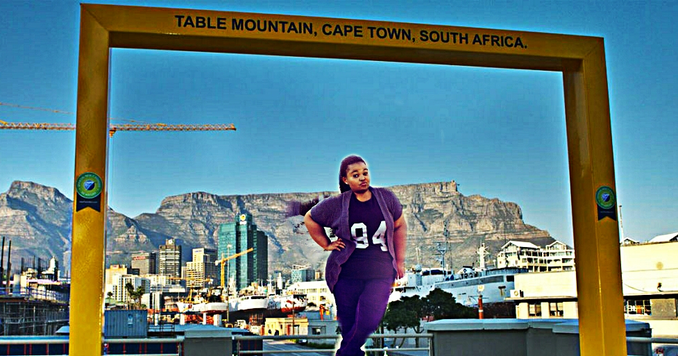
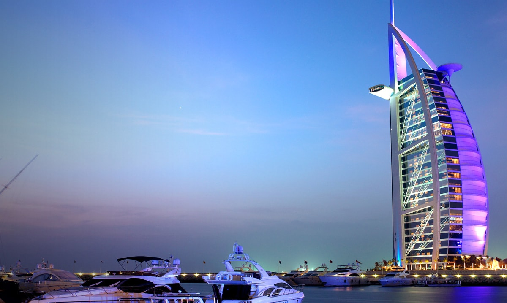

Viwe
Somagaca
Which city?

Dubai
- The low crime rate.
- It is a Taxfree country.
- It is Peaceful.
- It is Beautiful.
A Foreign Language
Spanish!
| English Phrase |
Foreign Phrase |
| Hello, How are you? |
Hola como estas |
| I Love Music |
me encanta la música |
| I am a Superstar |
Soy una superestrella |
| Today is Friday |
hoy es viernes |
Historic Places in the Waterfront

1. Clock Tower
- -A Graded Offices
- Located Next to the Nelson Mandela Gateway
- Easy access and exit Locations on the Waterfront
- Conferencing facilities in the Building

2 Robinsons Dry Dock
- Opened in 1882.
- Still used for reparing Ships even today.
- Named after Governor Sir Hercules Robinson.
- It repaired over 300 ships during world war 2.

3. The Swing Bridge
- The Swing Bridge maintains a working watch on VHF Ch 71
- The Call Sign for The Swing Bridge is “Swing Bridge”
- The Swing Bridge controls the opening of the blue Bascule Bridge